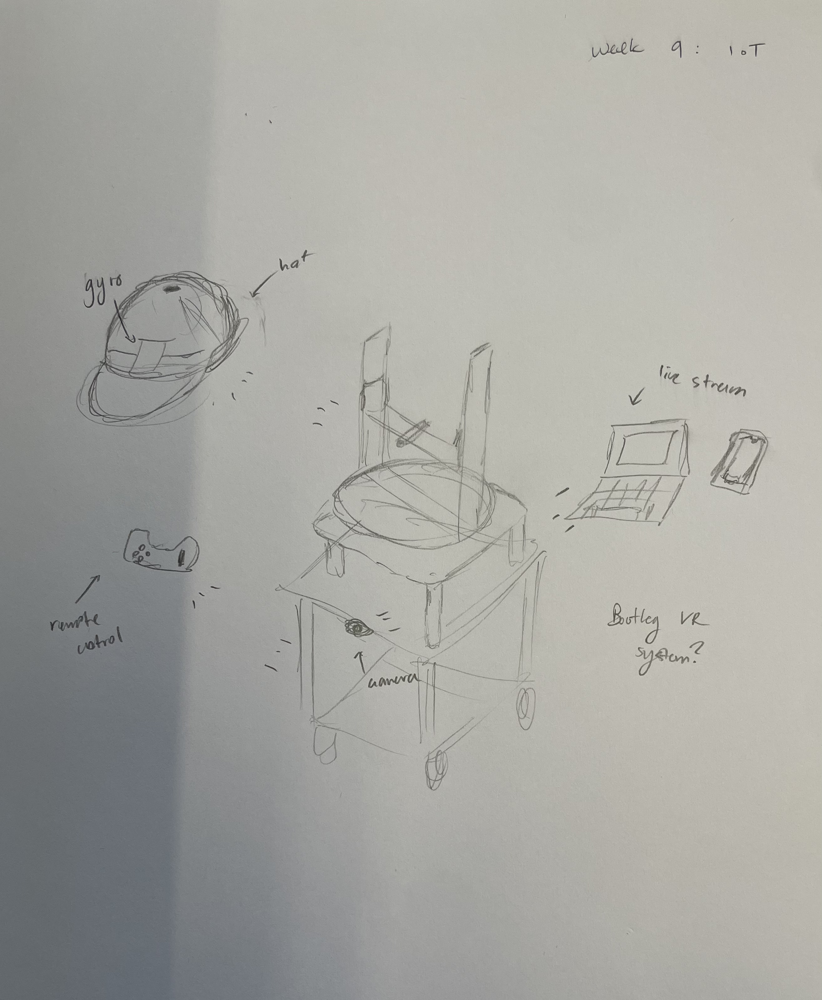
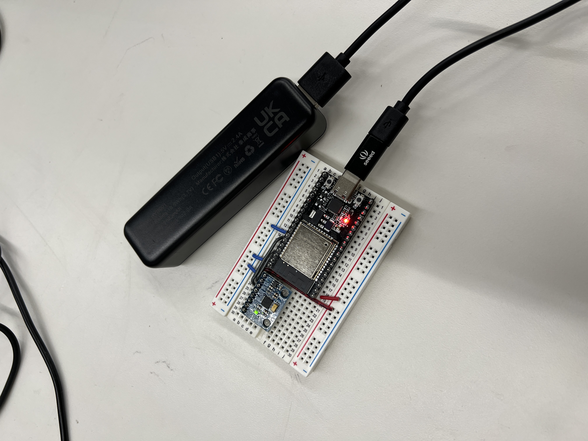
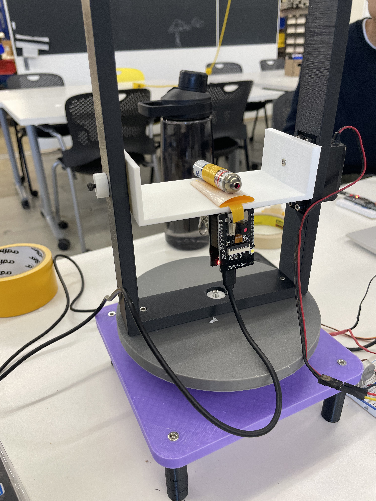

<div class="textcontainer">
<p class="margin"> </p>
<h3>Week 9: Radio, WiFi, Bluetooth (IoT)</h3>
<p class="margin"> </p>
<h4>Assignment: Program something with IOT</h4>
<p>For this week's assignment, Matthew, Victor, and I wanted to find a way to combine 3 of our projects
by getting them to all communciate with one another. We decided to use Victor's previous camera project,
Matthew's turret, and my moving table.
</p>
<h4>The idea:</h4>
<p>Get a gyro to control the head of the turret and stick it on the table.
</p>

<p class="margin"> </p>
<h4>Gyro Implementation</h4>
<p>We first connected the MPU-6050 Gyroscope to our ESP32 and made sure everything was properly working. We initially ran into
an issue with the first MPU-6050 Gyroscope not working, and we ended up having to switch it out for a new one.Then, we programmed
one ESP32 to receive input from the gyro and send that information to another ESP32 to move the turret head using ESP-NOW.
</p>
<a href="sender.cpp" download="gyro.cpp">Gyro Code</a>
<p>The gyro (sender) code works by getting data from the gyro's moement, such as acceleration, and sending it to the
turret head (receiver). </p>
<a href="reciever.cpp" download="turret_head.cpp">Turret Head Code</a>
<p> The turret (receiver) code then receives this data and translates it into movement by controlling two servo motors.</p>

<p class = "margin"></p>
<video controls width="350">
<source src="turret_point_2.mp4" type="video/mp4">
</video>
<video controls width="350">
<source src="turret_point_3.mp4" type="video/mp4">
</video>
<p class = "margin"></p>
<h4>Camera Implementation</h4>
<p> To implement the ESP32-CAM, we used the example code provided on the Arduino IDE. Then, we attached the camera to our turret head.
We had the live video stream via web server to one of our phones (connects by IP address).
</p>

<p class = "margin"></p>
<video controls width="350">
<source src="cam_video_1.mp4" type="video/mp4">
</video>
<video controls width="350">
<source src="cam_video_2.mp4" type="video/mp4">
</video>
<p class = "margin"></p>
<h4>Reflections</h4>
<p>Overall, the project was a fun way to work with radio and Wifi communication to combine our projects.
Although we didn't get to fully integrate the table in this iteration, we would like to move the remote control system
of the table onto a separate controller and fully integrate the three functions into a simple VR system in the future.
</p>
</div>